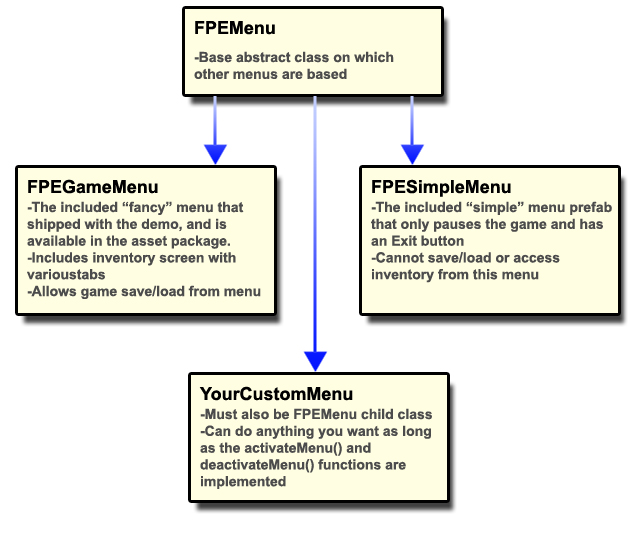

The FPEMenu class is a generic parent class from which all "game" menus must be derived. The FPECore prefab contains a reference to an object of type FPEMenu, which it instantiates when your game starts. The specific prefab that is designated to be the game menu can be changed. There are two FPEMenu-based prefabs that come with the asset package, which are detailed below.
The included FPEGameMenu prefab is designed to be a complex and feature rich game menu. It includes access to all inventory information, system configuration, and save/load actions.
The included FPESimpleMenu prefab is designed to be a bare bones pause menu. It's only job is to pause the game, and allow the player to quit to desktop. It has no other features
You can create your own child class of FPEMenu that can do anything you want. It must implement the activateMenu() and deactivateMenu() functions, as these are the hooks provided to the Interaction Manager in order to call up the menu and dismiss it (using the Menu key).
The main menu that ships with the demo and is included in the asset package is NOT based on the FPEMenu class. It is a unique class that is specifically designed to work in the designated "Main Menu" scene of your game. It handles special behaviours like creating new saved game files, transitioning the play controls from "2D menu mode" to "3D play mode", etc.